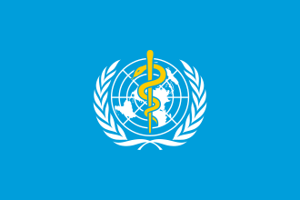

|
HOME |  |
ABOUT | BLOG |  |
|---|
|
HOME | |
ABOUT | BLOG | |
|---|

(WHO)
This article is about the science of healing. For medicaments, see Medication . For other uses, see Medicine (disambiguation). "Medical" redirects here. "Medical" is also the common informal term for a medical examination, q.v. Medicine is the science[1] and practice[2] of caring for patients, managing the diagnosis, prognosis, prevention, treatment, palliation of their injury or disease, and promoting their health. Medicine encompasses a variety of health care practices evolved to maintain and restore health by the prevention and treatment of illness. Contemporary medicine applies biomedical sciences, biomedical research, genetics, and medical technology to diagnose, treat, and prevent injury and disease, typically through pharmaceuticals or surgery, but also through therapies as diverse as psychotherapy, external splints and traction, medical devices, biologics, and ionizing radiation, amongst others.[3] Medicine has been practiced since prehistoric times, and for most of this time it was an art (an area of creativity and skill), frequently having connections to the religious and philosophical beliefs of local culture. For example, a medicine man would apply herbs and say prayers for healing, or an ancient philosopher and physician would apply bloodletting according to the theories of humorism. In recent centuries, since the advent of modern science, most medicine has become a combination of art and science (both basic and applied, under the umbrella of medical science). For example, while stitching technique for sutures is an art learned through practice, knowledge of what happens at the cellular and molecular level in the tissues being stitched arises through science. Prescientific forms of medicine, now known as traditional medicine or folk medicine, remain commonly used in the absence of scientific medicine and are thus called alternative medicine. Alternative treatments outside of scientific medicine with ethical, safety and efficacy concerns are termed quackery.
Growth of Medicine over the years
| S.No | Time period | Number | Cumilative Number | Growth Rate |
|---|---|---|---|---|
| 1 | >2006 | 36 | 36 | - |
| 2 | 2006-2010 | 74 | 110 | 206% |
| 3 | 2011-2015 | 253 | 363 | 342% |
| 4 | 2016-2017 | 273 | 636 | 108% |
| 5 | 2016-2020 | 682 | 1045 | 270% |
Presently, 75 countries have been identified for their contribution to DOAJ in the field of health and medicine. The top five contributors are the UK(81,12.74%),Brazil(57,8.96%),Poland(49,7.70%),Indonesia(42,6.60%) and Turkey(39,6.13%)